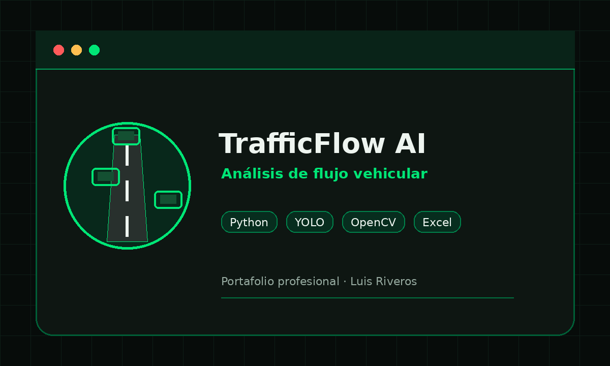
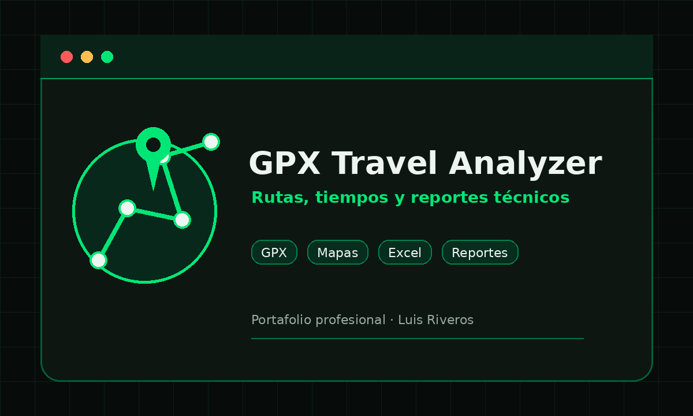
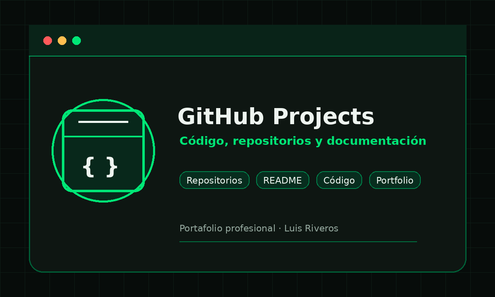

TrafficFlow AI
Sistema de análisis de flujo vehicular mediante visión por computadora, orientado a mediciones de tránsito, clasificación vehicular y generación de reportes técnicos.
Python · PySide6 · YOLO · OpenCV · Excel
Sobre mí
Soy Ingeniero en Informática con experiencia en desarrollo de aplicaciones de escritorio, automatización de procesos, análisis de datos y elaboración de reportes técnicos para proyectos reales. He trabajado en soluciones orientadas al procesamiento de archivos Excel, generación de herramientas para ingeniería de tránsito y construcción de sistemas personalizados para consultoría, con foco en productividad, trazabilidad y utilidad práctica.
Habilidades técnicas
Proyectos destacados

Sistema de análisis de flujo vehicular mediante visión por computadora, orientado a mediciones de tránsito, clasificación vehicular y generación de reportes técnicos.
Python · PySide6 · YOLO · OpenCV · Excel
Aplicación de escritorio para analizar enlaces, descargar video o audio, convertir formatos con FFmpeg y generar subtítulos mediante modelos de transcripción.
Python · PySide6 · yt-dlp · FFmpeg · Whisper

Herramienta para procesar trazas GPX, calcular distancias, tiempos de viaje, velocidades y generar reportes técnicos exportables.
Python · GPX · Excel · Mapas · Reportes

Repositorio profesional para documentar proyectos, herramientas, pruebas técnicas y soluciones de desarrollo de software.
Git · GitHub · README · Documentación
Servicios y áreas de trabajo
GitHub y documentación
Este sitio se complementa con repositorios en GitHub, documentación técnica, README de proyectos y código fuente orientado a mostrar criterio de desarrollo, estructura de trabajo y capacidad de implementación.
Contacto
Chile